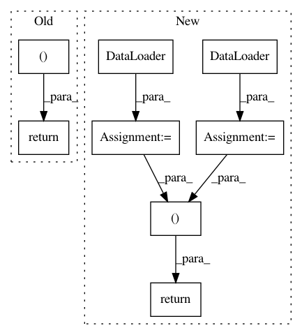

d192ef06119f3eccf569a844b30976db99cfa0f6,python/ray/util/sgd/torch/examples/cifar_pytorch_example.py,,cifar_creator,#Any#,23
Before Change
validation_dataset = torch.utils.data.Subset(validation_dataset,
list(range(64)))
return train_dataset, validation_dataset
def optimizer_creator(model, config):
Returns optimizer
After Change
train_dataset = Subset(train_dataset, list(range(64)))
validation_dataset = Subset(validation_dataset, list(range(64)))
train_loader = DataLoader(
train_dataset, batch_size=config[BATCH_SIZE], num_workers=2)
validation_loader = DataLoader(
validation_dataset, batch_size=config[BATCH_SIZE], num_workers=2)
return train_loader, validation_loader
def optimizer_creator(model, config):
Returns optimizer
In pattern: SUPERPATTERN
Frequency: 3
Non-data size: 8
Instances
Project Name: ray-project/ray
Commit Name: d192ef06119f3eccf569a844b30976db99cfa0f6
Time: 2020-03-10
Author: rliaw@berkeley.edu
File Name: python/ray/util/sgd/torch/examples/cifar_pytorch_example.py
Class Name:
Method Name: cifar_creator
Project Name: ray-project/ray
Commit Name: d192ef06119f3eccf569a844b30976db99cfa0f6
Time: 2020-03-10
Author: rliaw@berkeley.edu
File Name: python/ray/util/sgd/torch/examples/tune_example.py
Class Name:
Method Name: data_creator
Project Name: ray-project/ray
Commit Name: d192ef06119f3eccf569a844b30976db99cfa0f6
Time: 2020-03-10
Author: rliaw@berkeley.edu
File Name: python/ray/util/sgd/torch/examples/train_example.py
Class Name:
Method Name: data_creator